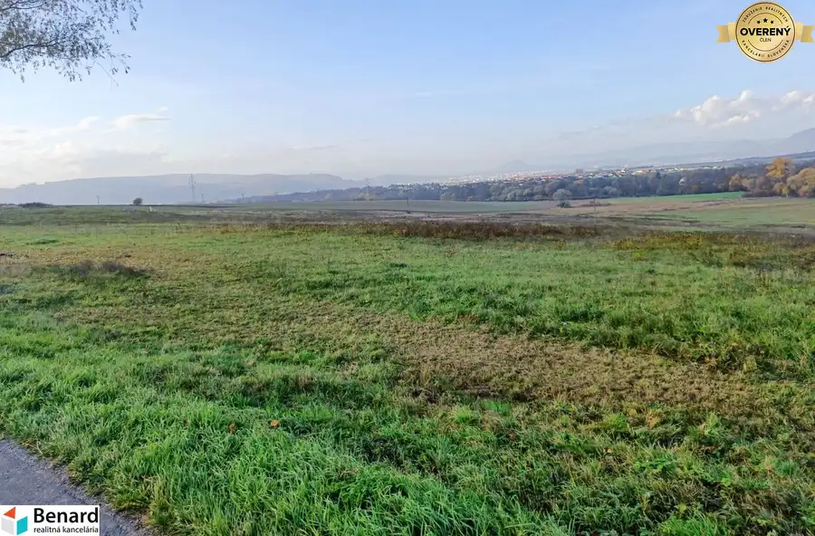
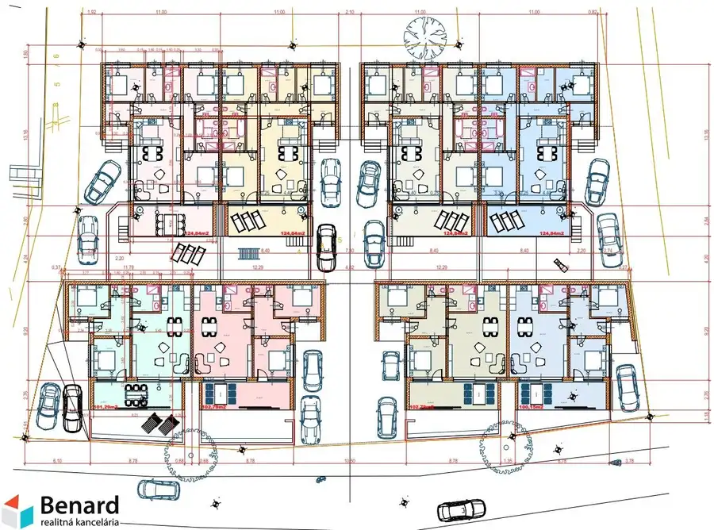
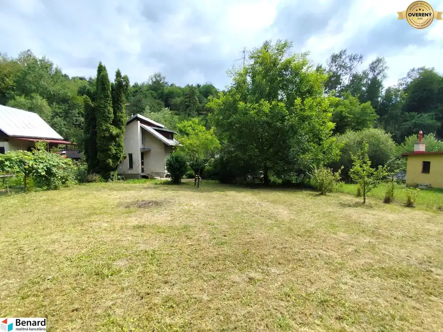

NOVÉ PARCELY určené na IBV! Pozemky Hnevlivá dolina, Prešov
Prešov
- Plocha600 m²
- Vlastníctvoosobné
O nehnuteľnosti
BENARD REALITY ponúka na predaj pozemky v krásnej novovznikajúcej lokalite v Prešove. Podľa územného plánu mesta je väčšina pozemkov určená na IBV. Ostatné pozemky sú v riešení.
Hlavná prístupová cesta ako aj vedľajšie prístupové cesty k pozemkom sú už vo vlastníctve mesta, zatiaľ nie sú upravené.
Pozemky sú momentálne bez IS. Budovanie IS bude realizované spoločenstvom vlastníkov pozemkov.
Uprostred doliny je podľa vypracovanej štúdie
navrhnutá zastávka MHD
, čo v budúcnosti podstatne zlepší dostupnosť k pozemkom.
Celá lokalita je slnečná, orientovaná na JV až JZ.
Pozemky 17,18,19 sa nachádzajú v blízkosti vysokého napätia (VN). Vhodné na užší rodinný dom, záhradu prípadne na garáže !!!
Urbanistická štruktúra k dispozícii v galérii fotografií.
Parcely označené písmenom P - PREDANÉ!
Neoznačené parcely - majitelia nemajú záujem o predaj týchto pozemkov.
ROZPIS JEDNOTLIVÝCH POZEMKOV URČENÝCH NA PREDAJ:
1 - 568 m2
2 - 1090 m2 - zatiaľ mimo IBV
3 - 782 m2 - zatiaľ mimo IBV
4 - 783 m2 - čiastočne v IBV
5 - 800 m2 - zatiaľ mimo IBV
6 - 800 m2 - čiastočne v IBV
7 - 671 m2
8 - 671 m2
9 - 700 m2
10 - 768 m2
11 - 744 m2 - čiastočne v IBV
12 - 751 m2
13 - 700 m2
14 - 568 m2
15 - 547 m2
16 - 675 m2 - zatiaľ mimo IBV
17 - 757 m2 - zatiaľ mimo IBV - v blízkosti VN (vhodné na rekreáciu, prípadne garáže)
18 - 411 m2 - zatiaľ mimo IBV - v blízkosti VN (vhodné na rekreáciu, prípadne garáže)
19 - 1033 m2 - zatiaľ mimo IBV - v blízkosti VN (vhodné na rekreáciu, prípadne garáže)
V prípade, že vás táto ponuka zaujala, neváhajte nás kontaktovať na , mailom na alebo priamo u nás v kancelárii na Slovenskej 8 v Prešove.
Pre vážnych záujemcov máme pripravené ďalšie fotografie ako aj video obhliadku, ktoré Vám poskytneme priamo u nás v kancelárii.
Parametre
| Rozloha pozemku | 600 m² |
|---|---|
| Poschodie | neuvedené |
| Vlastníctvo | osobné |
| Voda | nie |
| El. napätie | nie |
| Plyn | nie |
| Kanalizácia | nie |
| Inžinierske siete | blízko |
| Terén | mierny svah |
| Dátum zverejnenia | 26. 4. 2021 |
Kde to je
Mohlo by Vás zaujímať

Developerské projekty5 Cena dohodouPozemky vhodné pre developerov, Záborské, Prešov 26 460 m2 Záborské 26460 m² Z celého pozemku je už približne 9 000 m2 určených na individuálnu bytovú výstavbu (IBV). Zvyšnú plochu je možné upraviť zmenou územného plánu obce.…
Pozemok10 Cena dohodouPozemok pri vode so stav. povolením, domaša, Nová Kelča 2025 m2 Nová Kelča 2025 m² BENARD REALITY exkluzívne ponúka na predaj lukratívny stavebný pozemok v obci Nová Kelča s projektom a stavebným povolením na 8 luxusných…
Chaty a chalupy10 Cena dohodouMurovaná chata so záhradou 586 m2, Bardejov Bardejov 40 m² Na pozemku o rozlohe 586 m2 sa nachádza poschodová, čiastočne podpivničená murovaná chata so súpisným číslom a zastavanou plochou 34 m2. Záhrada…